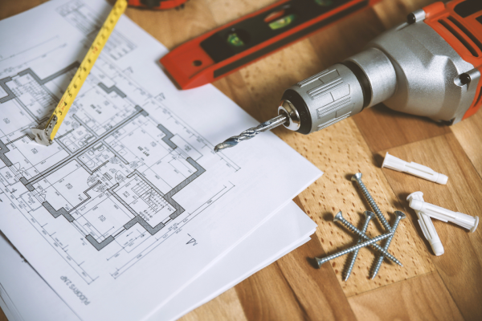

A inspeção das áreas comuns em condomínios busca identificar falhas construtivas por meio de análises técnicas e visuais.
Isso assegura que os proprietários recebam as áreas compartilhadas conforme prometido pela construtora. Realizar a inspeção antes do recebimento
oficial evita custos iniciais de manutenção e protege o síndico de responsabilidades legais.
A inspeção de recebimento de imóvel verifica problemas na construção usando análise técnica, visual e de documentos. Garante que
o proprietário receba o imóvel conforme comprou, seja na compra, aluguel ou após reformas..

A inspeção de entrega de obras identifica problemas construtivos após a construção ou reforma, permitindo correções pré-entrega.
Isso evita manutenções posteriores, protege a reputação da empresa e previne questões legais futuras com clientes
Serviços Prestados
Detecção Vazamentos
A vistoria de detecção de vazamento visa identificar a origem
precisa do problema através de análises técnicas e testes. Isso possibilita abordar a causa da
infiltração de forma eficaz, evitando gastos desnecessários em soluções temporárias e garantindo
reparos permanentes.
Laudos de AVCB
O Auto de Vistoria do Corpo de Bombeiros (AVCB) certifica o
cumprimento das normas de combate a incêndio em edificações. É obrigatório e requer renovação
anual para diversos tipos de estabelecimentos. A falta do AVCB resulta em penalidades e multas,
podendo levar a processos legais. Oferecemos o serviço de laudo de AVCB, uma vistoria e emissão
de laudo técnico que destaca irregularidades no sistema de combate a incêndio. Isso permite corrigir
problemas antes da inspeção dos Bombeiros, garantindo a segurança dos usuários.
Vistoria Cautelar de Vizinhança
A vistoria cautelar de vizinhança visa prevenir conflitos entre
construtoras e vizinhos próximos à obra, documentando anomalias e condições dos imóveis vizinhos
antes da construção. Essencial na fase de planejamento, evita disputas futuras sobre danos nas
estruturas adjacentes. Beneficia todas as partes, agindo de forma preventiva e atendendo a requisitos
legais, como a norma de Vistoria de Vizinhança do Ibape - Nacional.
Inspeção de Entrega de Obras
A inspeção de entrega de obras busca identificar irregularidades
construtivas, incluindo falhas de execução e discrepâncias em relação a normas, projetos e descrições
contratuais. Realizada após a construção ou reforma, essa verificação ajuda a construtora/incorporado
ra a encontrar anomalias antes da entrega final, reduzindo necessidades de manutenção pós-obra. Além
disso, preserva a reputação da empresa e evita possíveis problemas legais ao evitar desgastes com
clientes ou processos futuros.
Inspeção de Recebimento de Imóveis
A inspeção de recebimento de imóvel, busca constatar vícios construtivos ou
inconformidades, a partir da análise técnica, visual e documental. Tudo isso a fim de garantir que o proprietário
obtenha o seu sonhado imóvel exatamente como adquiriu no momento da compra. Também conhecida como vistoria de entrega das chaves, esse
serviço pode ser realizado na compra ou aluguel, bem como após reforma do imóvel.